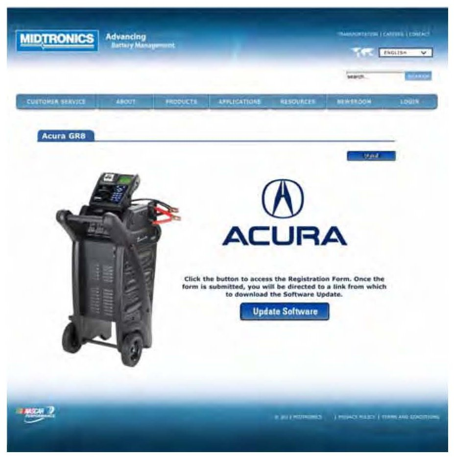

Electrical - GR8 Battery Diagnostic Station Update Information
09-034March 27, 2013
Applies To:
ALL
GR8 Battery Diagnostic Station Update Information
(Supersedes 09-034, dated February 12, 2011; see REVISION SUMMARY)
REVISION SUMMARY
This service bulletin has been revised extensively. American Honda recommends that you review the entire bulletin.
INTRODUCTION
The software for the GR8 Battery Diagnostic Station is updated periodically to fix software bugs and enhance the tool's functionality. You can now use the Midtronics GR8 update wizard to download software and firmware to your GR8 using a PC and the Internet. It is extremely important to use the latest GR8 software to ensure that the current battery testing and diagnostic procedures are used.
Acura introduced a new policy to ensure that GR8 testers are updated promptly. The GR8 software must now be updated within 3 days of receiving notification from an iN message or other Acura communication. If an out-of-date version is used, any battery or alternator replacements may not be covered under warranty.
GR8 UPDATE REQUIREMENTS
^ GR8 Battery Diagnostic Station:
P/N MTRGR81100P
^ USB-to-mini-USB cable (supplied with the GR8):
Midtronics P/N A128
^ Internet access
^ An IBM-compatible PC with Windows 7, Vista or XP operating system and Internet Explorer 7 or 8
To order the GR8 Diagnostic Station or the USB-to-mini-USB cable, go to the Acura Tool and Equipment catalog on the iN (select Service > Service Bay > Tool and Equipment > Online Catalog).
SOFTWARE INFORMATION
The current software version is listed online. Go to the iN (select Service > Service Bay > Diagnostic Tools Software Versions).
To check the GR8 software version, click on:
Language > Options > Info > Version
WARRANTY CLAIM INFORMATION
None. This service bulletin is for information only.
GR8 UPDATE INSTRUCTIONS
The update should take 10-15 minutes. Make sure that the update is not interrupted. If the update is interrupted, it could damage the GR8 and require you to send the GR8 to Midtronics for repair. This repair is not covered by warranty.
NOTE:
The screens shown below are examples from a typical installation. Your screens may vary.
1. Make sure the GR8 is off and the SD card is removed.
2. Online, go to
http://www.midtronics.com/client-log-in
3. Enter the username and password listed below, then click Login.
Username: acuragr8
Password: acuragr8

4. You should see an image of the GR8 tester. Click on Update Software.
5. Fill in your dealer number, the service manager's name, and the GR8 serial number(s). The dealer name, the dealer address, and the dealer phone number are automatically filled in. Click SUBMIT REQUEST.
6. You should see the image of the GR8 tester again. Click on the highlighted Acura GR8 Software Update link.
7. A File Download - Security Warning screen appears. Select Run.
8. A file will be downloaded to your computer. After it is finished, an Internet Explorer - Security Warning screen appears. Select Run.
9. The Midtronics Update Wizard appears. Refer to SOFTWARE INFORMATION to find the current software version.
10. Turn on the GR8, and follow the Update Wizard on-screen instructions.
11. When the update is complete, the Update Results screen appears, indicating the update was successful. Click Finish to close the Update Wizard.
12. Turn the GR8 off for 10 seconds. Reinstall the SD card, then turn the GR8 on, and confirm that the software is updated to the software version listed under SOFTWARE VERSION.
13. If an error message appears anytime during the update, follow the on-screen instructions, and try updating the GR8 again. If the error message does not go away, or if you have any other problems updating the GR8, call Midtronics.
14. If you have more than one GR8, repeat the update procedure for each unit.
15. Once all GR8s are updated, store the USB-to-mini-USB cable in a safe location for future updates.

Disclaimer